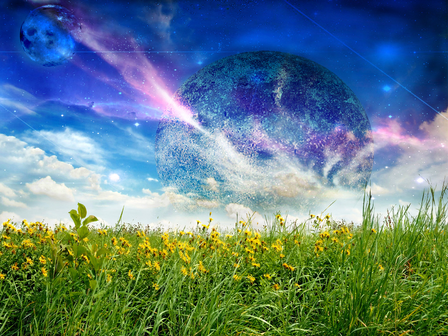
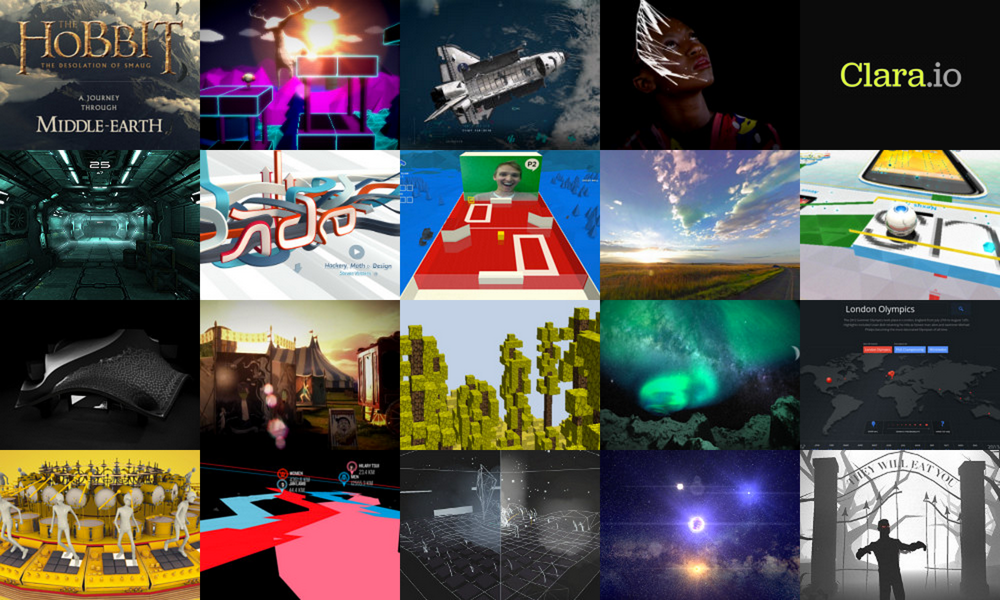
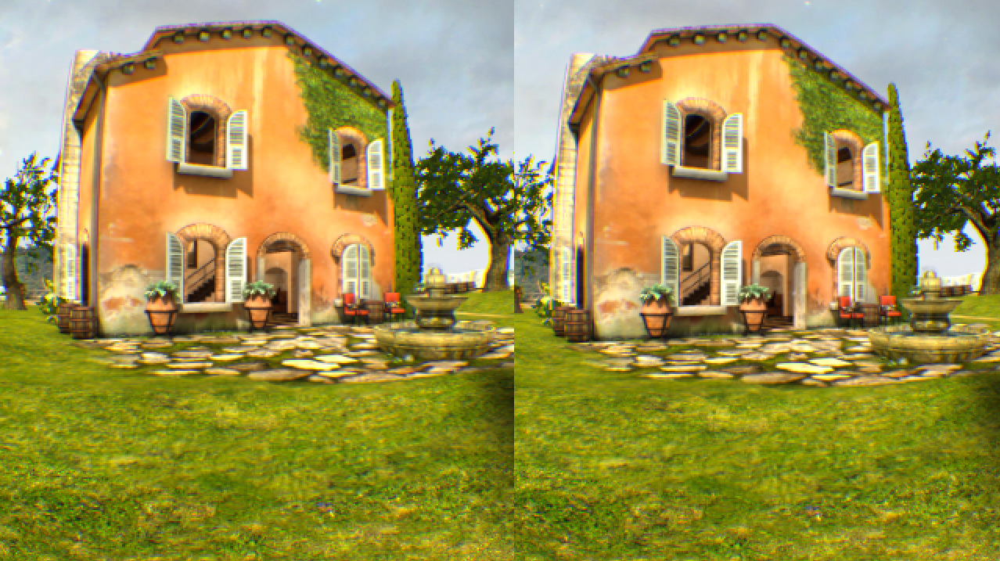
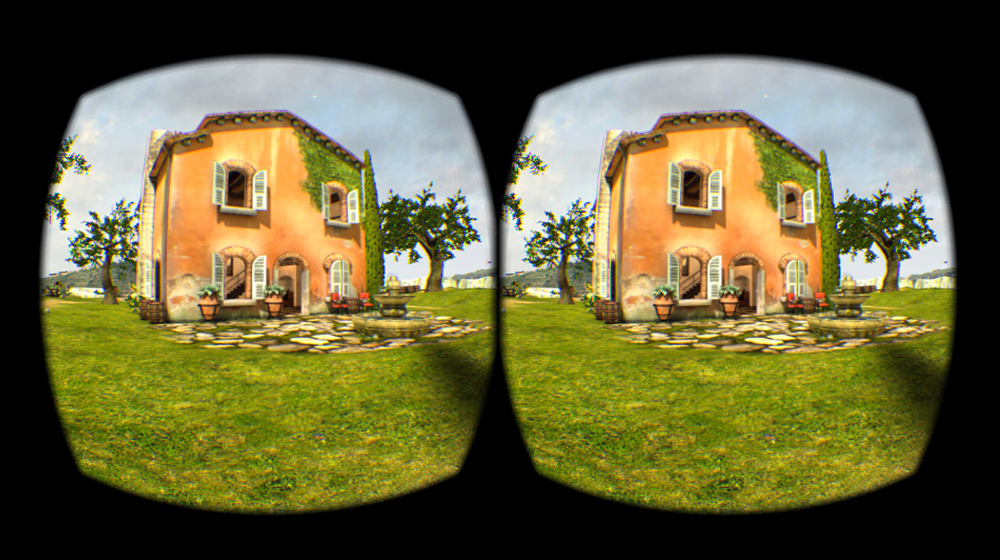
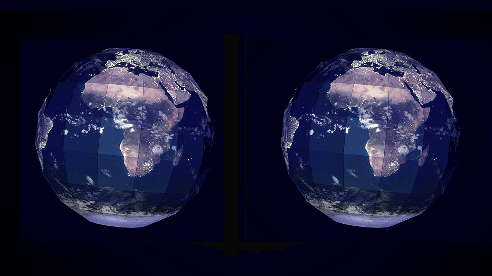
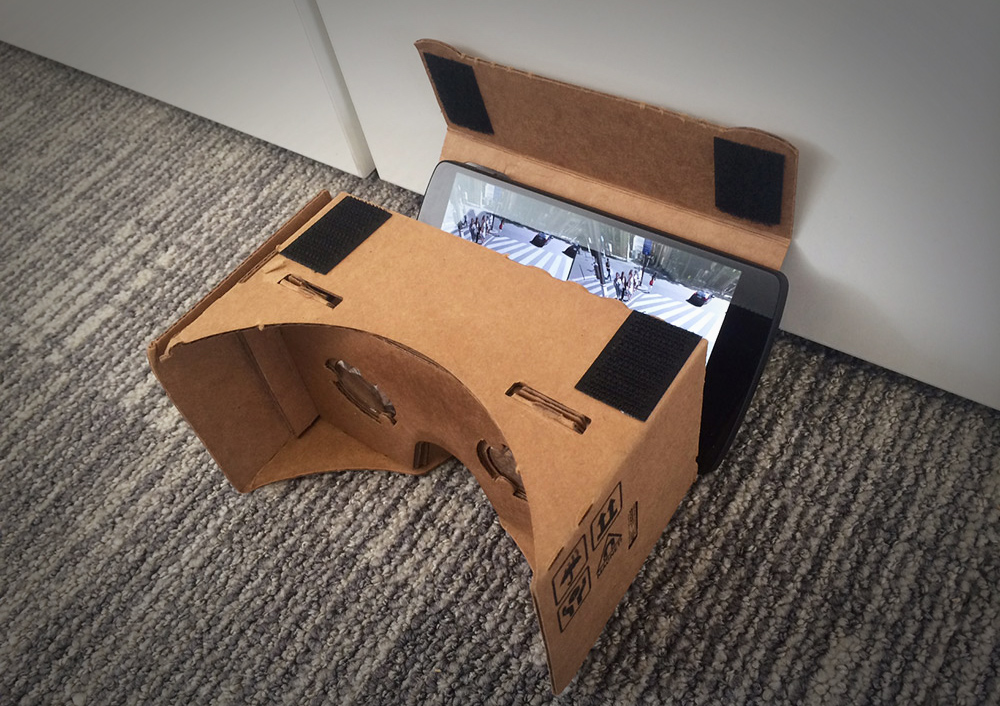

The Virtual Reality Web
Peter O'Shaughnessy | @poshaughnessy
Imagine the possibilities...

VR web apps possible now
- Oculus Rift
- Google Cardboard
Oculus Rift
Browsers implementing:
- Device discovery
- Full screen extensions
- Sensor integration, e.g. orientation
- Rendering for different hardware
“WebVR”
- "Version Zero"
- Not even in alpha channels yet
Step 1: Develop WebGL app as usual
I recommend three.js
Step 2: Add WebVR goodness
Get available VR devices
if( navigator.getVRDevices ) {
navigator.getVRDevices().then( ... );
}(This is the only code I'll show - promise!)
Render scene twice, once for each eye
WebVR provides recommended eye FOV & translation
Request full screen on the VR device
The browser will handle the distortion!
Step 3: Ensure you have included at least one dinosaur
Oculus Rift Web TRex!
Thanks to DK and eyeon Software for lending me the content.
Just set transform-style: preserve-3d
And request full screen on VR device
Google Cardboard
Google Cardboard
- No WebVR support yet
- But we can use HTML5 Orientation API
- Three.js provides DeviceOrientationControls
- ...and StereoEffect
Cardboard TRex! (Minus Cardboard)
Thanks again to DK for lending the dinosaur.